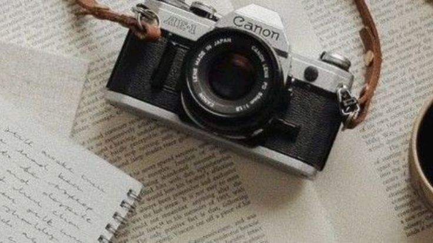
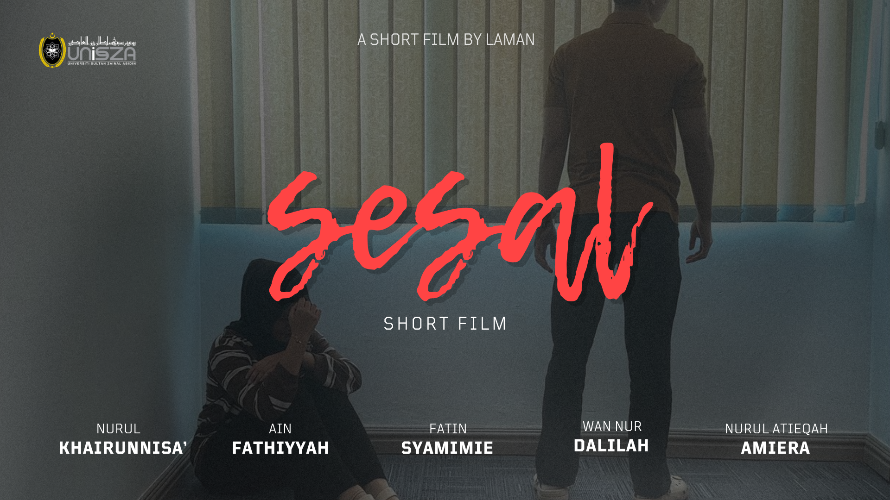
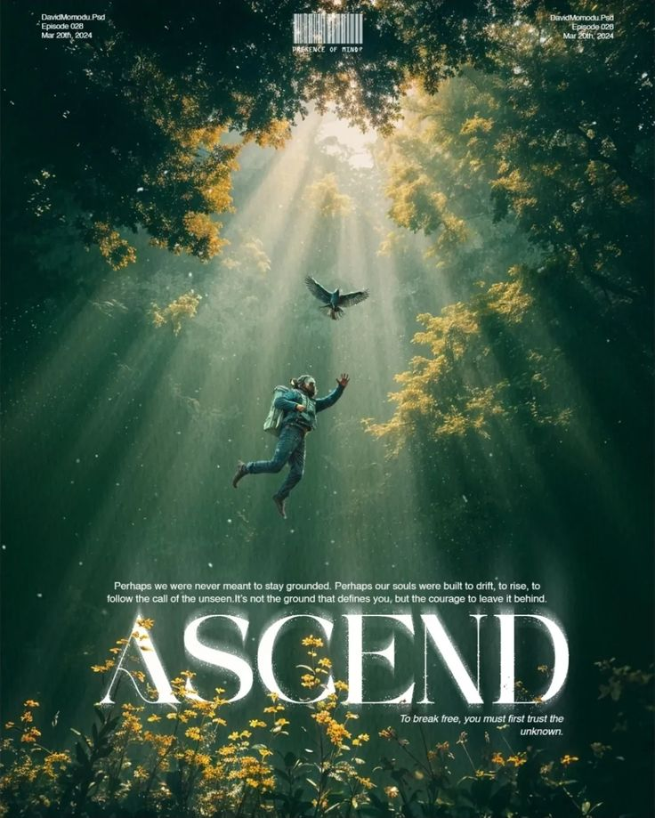
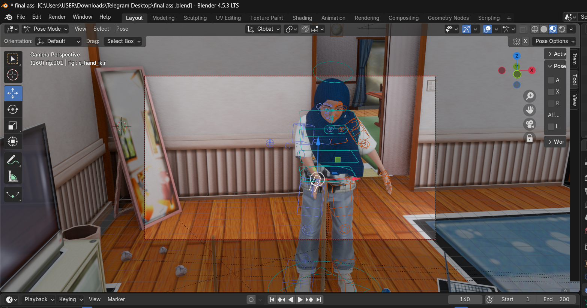

Projects & Experiences

VR Project About Terengganu Legends
I developed a Virtual Reality application about Terengganu legends.
View Details →

Photography
I have experience in photography and photo editing.
View Details →

Videography
I have experience in videography, video editing and visual storytelling.
View Details →

Graphic Design
Designing posters, logos and digital artwork enhanced my creativity.
View Details →

3D Animation
Through 3D animation projects, I developed animation and storytelling skills.
View Details →